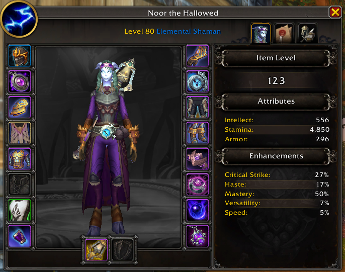

About Noor
Noor the Hallowed is a level 80 Elemental Shaman of the Khadgar realm, wielding the raw forces of nature with precision and calm intensity. Channeling lightning, fire, and earth, Noor stands at the intersection of balance and destruction equally capable of supporting allies and overwhelming enemies from a distance.
With a focus on mastery and control, her journey reflects a deep connection to the elements rather than brute force. Whether facing challenges alone or as part of a group, Noor adapts, endures, and strikes when it matters most.

Noor the Hallowed · Level 80 Elemental Shaman · Khadgar Realm
Noor’s characteristics
- Discipline: Elemental Shaman
- Affinity: Lightning and fire
- Combat Style: Controlled, ranged spellcasting
- Strengths: Precision and elemental balance
- Focus: Mastery over raw power
- Realm: Khadgar
Noor’s Friends
- Silverbow the Seeker
- Neytire, Assistant Professor
Silverbow the Seeker is a level 80 Marksmanship Hunter on the Khadgar realm and one of Noor’s trusted companions. With precise aim and a calm, focused approach, she excels at ranged combat, striking from a distance while adapting to any situation.
Neytire is a level 80 Protection Paladin on the Khadgar realm and one of Noor’s most dependable allies. With strong defenses and unwavering presence, she protects her companions on the front line absorbing damage and maintaining control in even the most intense encounters.